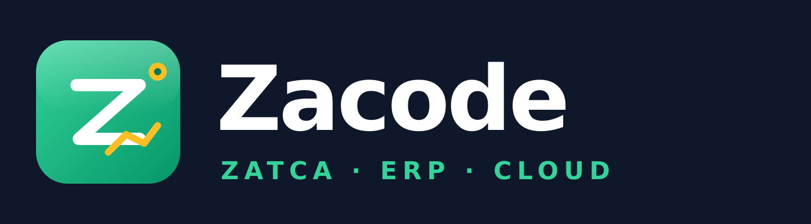

مصدر موحّد للمعلومة
ربط المستندات والحركات التشغيلية بالتقارير المالية والمخزنية ذات الصلة.

عرض فني وتجاري مبدئيمنظومة زاكود لإدارة موارد المنشآت — من العمليات اليومية إلى الرؤية الإدارية الشاملة.
منصة مرنة تربط الحسابات والمبيعات والمشتريات والمخزون والإنتاج والمشاريع والموارد البشرية، مع تهيئة نطاق العمل بحسب احتياج المنشأة وطبيعة نشاطها.
عندما تتوزع بيانات المنشأة بين ملفات وبرامج متعددة، يصبح الوصول إلى صورة موحّدة عن المبيعات والمخزون والتكاليف والتحصيل أكثر صعوبة. يقدّم زاكود إطارًا متكاملًا لربط العمليات اليومية والبيانات المالية في منصة واحدة، بما يساعد فرق العمل والإدارة على المتابعة واتخاذ القرار على أساس معلومات أكثر تنظيمًا.
ربط المستندات والحركات التشغيلية بالتقارير المالية والمخزنية ذات الصلة.
تنظيم الوصول بحسب المستخدم والدور والفروع والوحدات المفعّلة.
متابعة الأداء والأرصدة والحركة التشغيلية عبر تقارير ولوحات مؤشرات.
اختيار الوحدات المناسبة أولًا، ثم توسيع الاستخدام وفق الأولويات.
تختلف النتائج الفعلية بحسب جودة البيانات، ودرجة التهيئة، والتزام فرق العمل بالإجراءات المعتمدة.
يُختار نطاق الوحدات وتفاصيل الإعداد بعد فهم إجراءات المنشأة، ويمكن البدء بالأولويات التشغيلية ثم التوسع المنظم.
دليل حسابات، قيود، خزائن وبنوك، ذمم، مراكز تكلفة، وتقارير مالية.
عروض وفواتير ومرتجعات، متابعة العملاء، وربط المبيعات بالمخزون والتحصيل.
إدارة مستندات الشراء والموردين والتكاليف المرتبطة بالتوريد بحسب الإعداد.
أصناف ووحدات وباركود، عدة مستودعات وفروع، وجرد وتتبع لحركة الأصناف.
أوامر إنتاج ومكوّنات تصنيع، حركة مواد تحت التشغيل، وتكلفة الإنتاج والهالك.
متابعة المشاريع والعقود ومستخلصات الأعمال والتكاليف ومراكز التكلفة.
إدارة بيانات الموظفين ووظائف الموارد البشرية المتاحة بحسب نطاق التفعيل.
دعم عمليات البيع المباشر، مع تقارير ولوحات مؤشرات لمتابعة الأداء.
توافر كل وحدة أو تكامل يخضع للباقة المختارة، والبلد، ومتطلبات الجهة ذات العلاقة.
تتغير الأولويات من نشاط إلى آخر؛ لذلك تُبنى تهيئة زاكود حول دورة العمل الفعلية، لا حول قالب واحد مفروض على الجميع.
ربط العمليات المالية بمستنداتها ومراحلها.
قراءة أثر الحركة على الرصيد والتكلفة.
تنظيم الوصول حسب هيكل المنشأة.
متابعة المؤشرات ذات الأولوية للإدارة.
يبدأ التطبيق بفهم الإجراءات والبيانات، ثم تُعتمد خطة التنفيذ والمسؤوليات ومعايير القبول قبل الانتقال إلى التشغيل الفعلي.
توثيق طبيعة النشاط والفروع والوحدات وأهم إجراءات العمل والتقارير المطلوبة.
اعتماد الوحدات، الصلاحيات، دليل الحسابات، المستودعات، ودورات الاعتماد ذات الصلة.
مراجعة البيانات المراد إدخالها أو استيرادها، ثم اختبار السيناريوهات المتفق عليها.
تدريب المستخدمين بحسب أدوارهم، وتجهيز الانتقال إلى التشغيل وفق خطة معتمدة.
متابعة الملاحظات بعد الإطلاق وتقديم الدعم والتحديثات وفق مستوى الخدمة المتفق عليه.
تحديد ما يمكن لكل مستخدم الاطلاع عليه وتنفيذه.
تتبع العمليات والتغييرات المهمة بحسب الوحدة.
إمكانية البدء بوحدات ذات أولوية ثم التوسع.
تثبيت نتائج الاختبار ونطاق التسليم المتفق عليه.
لأن هذا العرض موجّه إلى أنشطة وأحجام مختلفة، فإن القيمة التجارية النهائية تُقدّم في عرض تفصيلي بعد تحديد نطاق الاستخدام والمتطلبات الفنية والتشغيلية.
جلسة تعريف وتحليل مختصرة لتحديد أولويات المنشأة، ثم إعداد نطاق فني ومالي مناسب يوضح الوحدات المقترحة وخطة التطبيق والمتطلبات اللازمة للانطلاق.